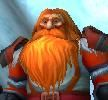

Récits Légendes de Kirin Tor Personnages Célébrités Guildes
Outils Calendrier Calendrier Illustré Mod d'interface
Informations Historiens FAQ Liens Crédits
Les légendes de Kirin Tor
Guybruch Treepwood
Mail : ==> Afficher les personnages de Guybruch Treepwood
Guybruch
 Age : 22
Age : 22
Sexe : Homme
Race : Humain
Faction : Alliance
Formation : Voleur
Description : On le sait originaire de Kul Tiras et ayant le pied marin.
Si vous demandez à un Garde qui est Guybruch, il vous dira que c'est un bon Garde binoclard qui ne se laisse pas faire et qu'il aime parfois lire et s'informer des affaires d'Azeroth et surtout de Lorderon.
Si vous vous rendez dans les ruelles sombres de Stormwind, vous pourrez peut etre par chance croisé un ancien de la Lacrima Noctra qui vous revelera pour une belle somme le traitre mot qu'il cache bien son jeu dans la Garde ou alors qu'il a sacrement changé.
Si vous demandez par inadvertance à un rescapé des Faucheurs Noctures, il pourra vous dire que ce maudit fils de putois a été la perte de son organisation si noble et un salopiot de petit espion.
Si vous posez la question à un homme du nom de Torbin, il vous avoura que c'est un fier défenseur de l'Alliance et ne s'étonnera pas qu'il soit rentré dans la Garde de Stormwind.
Si vous rencontrez Argrima, il réfléchira un peu avant de surment vous dire que c'est un brave menteur qui ne merite la confiance de personne.
Si vous abordez le sujet avec un Chasseur de Prime, il ne vous dira surment que c'était un bon, et qu'il ne comprend pas vraiment le fait qu'il se soit "ranger".
Enfin, si vous croisez un nain a la grande barbe du nom de Montgar, il vous déclara que c'est un fameur joueur de dès, et un véritable ami, loyal et fier.
Peut etre pour finir, vous tomberez sur quelques femmes ayant succombé a son charme, ses roses, son élégance et sa panache dans les combats à la rapière pour le coeur d'une femme.
Plus d'infos sur Guybruch >>>
Deemer
Age : 32Sexe : Homme
Race : Nain
Faction : Alliance
Formation : Chasseur
Description : Né dans à l'Est des Paluns, il a survenu au Clan de Dragonmaw caché par ses parents durant la seconde guerre.
Il s'engage dans les troupes de l'Alliance comme fusiler dès sa majoritée,. Il est envoyé à Lorderon avec sa section pour participer au opération d'Arthas pour contrer la marche du fléau à Hearthglen. Il parvient a tenir tête aux assaults des Morts-vivants jusqu'à l'arrivée de Uther, mais il est gravement blessé et ne peut plus combattre pour longtemps. Il est donc rapatrié au Palun et ne peut que s'imformer de la trahïson d'Arthas et a l'offensive de la Légion Ardente.
Comme par vengance vis à vis des Réprouvés, il s'est rallié au Seigneur Tyran et suis les ordres du Chevalier noir Turannos jusqu'à l'assault de Lorderon ou il fut pas présent car une nouvelle fois blessé. Il a constitué avec la derniere poche de résistance de l'Ordo Imperium bien apres la chute du culte. C'est en étant sauvé par un fantassin de la Phalange Ecarlate qu'il décide après d'avoir chercher à Stormwind des survivants de l'Ordo Imperium, de rejoindre les troupes de Hiranthus.
Plus d'infos sur Deemer >>>